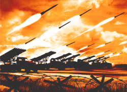

70 лет Победы
Команда Blend4Web поздравляет всех с праздником Победы! К этому замечательному дню мы подготовили необычный подарок - интерактивную 3D открытку. Мы воссоздали в виртуальном пространстве модель "Катюши" - знаменитого оружия Великой Отечественной войны. Предлагаем прикоснуться к нашей героической истории и произвести праздничный салют!
Инструкция
Перетащите ракеты из ящиков на направляющие пусковой установки. Катюшу можно зарядить любым количеством снарядов до 16 штук. Когда посчитаете, что ракет достаточно, нажмите красную кнопку.
Историческая справка
 "Катюша" - прозвище семейства реактивных систем залпового огня, преимущественно БМ-13. Главным элементом боевых машин этого типа была пусковая установка, которая устанавливалась на автомобильные шасси ЗИС и поставлявшиеся по ленд-лизу Студебеккеры. Стрельба из БМ-13 производилась 132 мм неуправляемыми ракетами, разработанными в Реактивном институте (РНИИ) в 1930-х гг. Длина снаряда составляла 146 см, масса 42 кг. Ракеты были способны поражать цели на расстоянии до 8,5 км. Возможность одновременного внезапного поражения целей на значительных площадях обеспечивала исключительную эффективность воздействия на противника. Всего за годы войны было произведено более 10 000 единиц различных модификаций "Катюш". Это по-настоящему чудо-оружие, разработанное советскими инженерами, внесло решающий вклад в победу нашего народа над фашизмом.
WWII 70th Anniversary
The Blend4Web team is glad to congratulate all of you with the 70th Anniversary of the end of World War II! We have prepared a special gift for this remarkable date - an interactive 3D greeting card. "Katyusha", a famous WWII weapon, has been recreated as a 3D model in the virtual space. Get a feel for this glorious moment in history and make a celebratory salute!
How To
Drag rockets from the boxes and drop them on the launch rails. Up to 16 projectiles can be loaded in Katyusha. Press the red button to launch!
Background
"Katyusha" (endearing diminutive form of "Katherine") was a nickname for multiple rocket launchers, primarily the BM-13. The main element of these combat vehicles was the rack of launch rails mounted on the back of a truck such as the Studebaker US6 supplied through Lend-Lease. BM-13 fired 132 mm (5.2 in) unguided rockets which were capable of destroying targets within a 8.5 km (5.3 mi) range. The rockets were 146 cm (4 ft 9 in) in length and weighed 42 kg (93 lb). Katyusha became famous for its devastating effect having been able to impact significantly large areas at once. In total, the Soviet Union had built 10 000 Katyusha launchers by the end of the war.